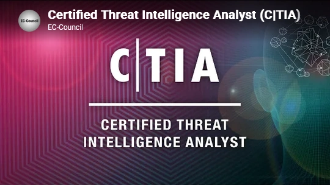
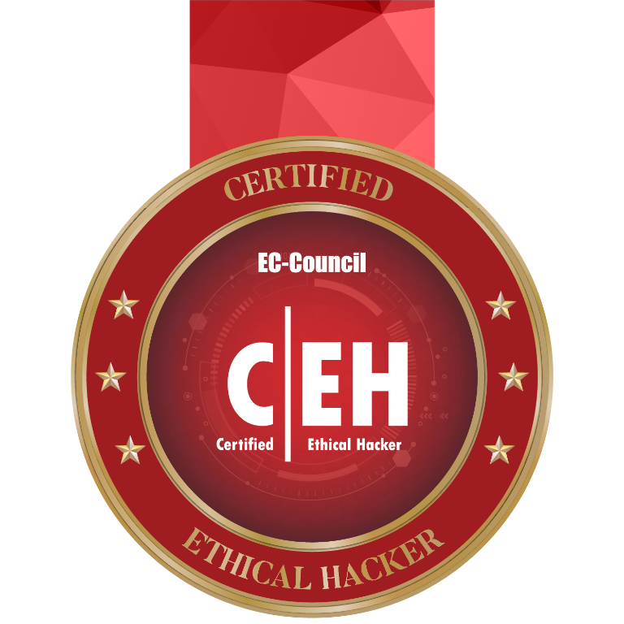
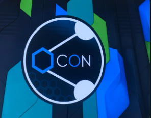
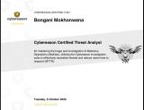

01
Vulnerability & endpoint security
Identifying and prioritizing vulnerabilities, assessing endpoints, and understanding detection and response controls.
Penetration tester portfolio / 2026
Offensive security · Red-team mindset · Web & network testing
I build practical pentesting skills through hands-on labs, real-world-style attack paths, and clear technical reporting. My work focuses on finding risks, validating them, and turning them into actionable security outcomes.
About
I'm a cybersecurity practitioner with a pentester mindset: I map attack paths, validate weaknesses, and document the impact in a way that is practical for defenders.
My work covers Linux and network fundamentals, web application testing, privilege escalation, vulnerability analysis, and controlled exploitation in lab environments. I focus on turning technical exploration into structured findings, repeatable workflows, and useful security guidance.
Capabilities
Areas represented across certifications, labs, and training. Course topics reflect training; they are not all claims of professional experience.
01
Identifying and prioritizing vulnerabilities, assessing endpoints, and understanding detection and response controls.
02
Monitoring and investigating security events, analyzing alerts, and learning incident response and threat-hunting workflows.
03
Structured lab practice in network discovery, penetration-testing methodology, and controlled security testing.
04
Collecting and assessing open-source information, indicators, and threat context to support intelligence and hunting workflows.
05
Training in web and email defenses, phishing analysis, application trust boundaries, and social-engineering awareness.
06
Foundational study of identity environments, operating systems, infrastructure, and scripting for repeatable workflows.
07
Specialist training covering wireless assessment, radio-frequency fundamentals, mobile security, and cryptographic concepts.
08
Understanding security priorities and legal context, and applying threat-informed defensive thinking to protect important assets.
Methodology
Identify exposed services, trust boundaries, and the paths attackers would try first. Good recon reduces wasted effort and sharpens the test.
Probe the most likely attack chains, confirm exploitability, and separate noise from business-impacting issues.
Document the impact, provide a clear remediation path, and leave stakeholders with practical guidance they can implement.
Learning principles
Original reflections on hands-on, ethical security learning.
“A tool is only as useful as the question you ask with it.”
Practice principle / 01
“Build skills in the lab; test real systems only with permission.”
Practice principle / 02
“A finding becomes useful when its evidence leads to a fix.”
Practice principle / 03
Labs
Hands-on network, web, and infrastructure engagements that reflect how I practice offensive security. Dates are sourced from the posts; “Completed” is shown only when a post explicitly reports completion.
A high-level review of a legacy SCADA vulnerability, its operational risk, and defensive lessons from an isolated lab.
Read assessment summary
Using Nessus to find vulnerabilities on a network. The original post includes the full image set and archive details.
View lab post
A hands-on learning post, with all images from the original archive entry.
View lab post
Four archive posts documenting Active Directory training and lab work, with the original post images.
View lab posts
In progress: EC-Council Certified Threat Intelligence Analyst, covering the intelligence lifecycle from planning and collection through analysis and dissemination.
View certification notes
EC-Council certification in ethical hacking and penetration testing, focused on assessing security within authorized scope.
Explore certification notes
Conference notes on malware analysis, AI security, email security, and pentesting with AI assistance.
View conference notesDemos
Watch a hands-on training recording, then try sample commands in a browser-only terminal simulation.
A screen recording shared as a learning artifact from practical cybersecurity training.
Command session
Try help, whoami, ls, or clear. This demo returns sample output only; it does not run commands on your device or connect to any target.
Available commands: help, whoami, ls, and clear.
Welcome. Type help to see available commands.
Credentials
Completed
CEH certification in ethical hacking and penetration testing, earned within authorized scope.
Explore the certification notesIn progress
Currently studying the intelligence lifecycle, including planning, collection, processing, analysis, production, and dissemination.
Explore the certification notes40 credentials
All 40 licenses and certifications provided from my LinkedIn profile. Dates and skills are shown where supplied.
Tenable
Skill: Vulnerability Management
Cybereason
Cybereason
Skill: Incident Response
Cybereason
Skill: Cyber Threat Hunting (CTH)

Cybereason
Skill: Endpoint Detection and Response (EDR)
BeyondTrust
Kaspersky
Kaspersky
Kaspersky
Kaspersky Issued Mar 2026
Mimecast
Mimecast
Elastic
Skill: Elasticsearch
Hackers Arise
Skills: Matrices, tactics, techniques, and procedures (TTPs)
Hackers Arise
Skill: Cyberlaw
Hackers Arise
Skill: Incident Response
Hackers Arise
Skill: Identify, analyze, and mitigate threats, attacks, and vulnerabilities
Hackers Arise
Skill: Python programming
Hackers Arise
Skill: Metasploit
Hackers Arise
Skill: Darkweb operator
Hackers Arise
Skill: Networking
Hackers Arise
Skill: Ethical hacking
Hackers Arise
Skill: Social engineering
Hackers Arise
Skill: Nmap
Hackers Arise
Skill: Red teaming
Hackers Arise Issued Feb 2026
Skill: Cyber Threat Intelligence (CTI)
Hackers Arise Issued Jun 2025
Skills: SIEM and SOC workflows, threat detection, alert analysis, malware traffic analysis, endpoint monitoring, digital forensics, and cyber threat hunting
Hackers Arise
Skill: OSINT
Hackers Arise
Skill: Wireshark
Hackers Arise
Skill: Symmetric and asymmetric cryptography
Hackers Arise
Skill: WPA2 handshake capture and offline dictionary attack with Aircrack-ng
Hackers Arise
Skill: Radio frequency (RF) fundamentals
Hackers Arise
Skill: Setting up and operating a command and control (C2) framework
Hackers Arise
Skills: Cyber defense, adversary TTPs, MITRE ATT&CK, threat intelligence, mission-critical asset prioritization
Hackers Arise Issued Jun 2026
Skill: Mobile hacking
Hackers Arise
Hackers Arise
Skill: Vulnerability research
Hackers Arise
Skill: Active Directory
Hackers Arise
Skill: Linux
EC-Council Issued Oct 2025 · Expires Dec 2028
Skill: Penetration testing
Contact
For cybersecurity opportunities, collaboration, or questions about my work, find me on LinkedIn.